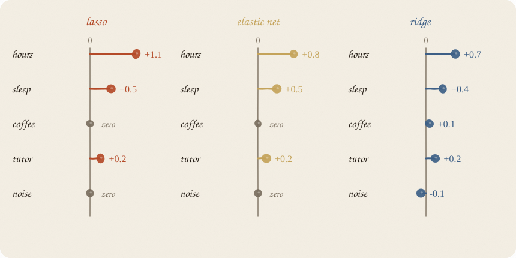
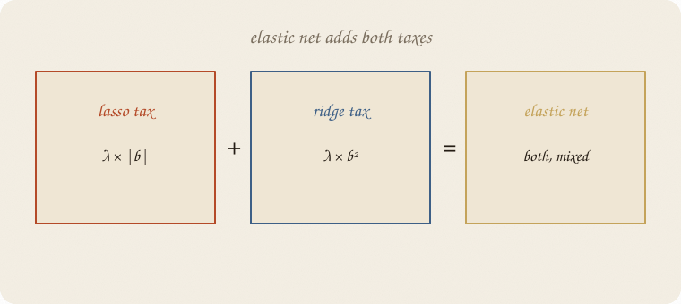
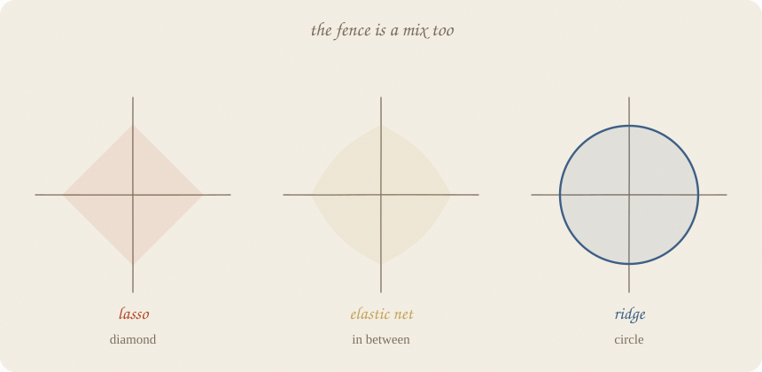
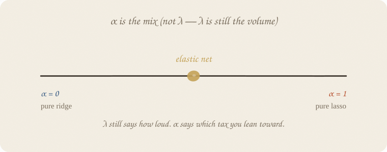
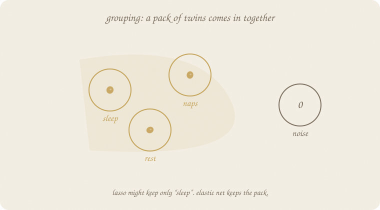
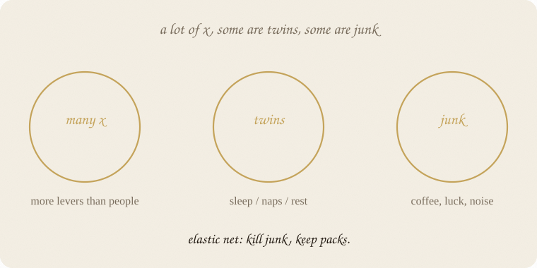

datazines · a sketchbook
Elastic net — a sketchbook

Read 03 lasso and 02 ridge regression first. Elastic net is the compromise kid.
Flip it like a notebook. One page = one idea. Done.
Page 1 — Two good personalities, two bad habits
Ridge: everyone quieter. Twins share. Junk also stays, whispering.
Lasso: a short list. Junk dies. Twins hold a talent show and one gets fired — often by luck.
You often want both gifts:
- kill the noise
- keep a pack of related x together
That mix is elastic net.
Not a new shape of line. Both taxes, at once.
Page 2 — Add both taxes
Still ŷ = a + b’s.
Still: small residuals, please.
Elastic net’s score:
how wrong on the points
+ a lasso tax on |b|
+ a ridge tax on b²

The V and the U. Sharp corner (so zeros can happen) plus a smooth bowl (so twins are not forced into a knife-fight).
λ is still how loud.
A second knob, α (alpha), says which tax you lean toward.
Page 3 — The fence in between
Ridge: circle.
Lasso: diamond.
Elastic net: a rounded diamond. Corners exist, but they are less stabby. Sides bulge toward a circle.

Corners still let a knob hit exactly 0. So selection lives.
The bulge means the kiss-point can sit on an edge with two modest knobs, not just one winner. So grouping lives.
If you only remember the picture: diamond enough to fire, circle enough to share.
Page 4 — The twin test, three ways
Hours and minutes. Same fact.

| hours | minutes | vibe | |
|---|---|---|---|
| lasso | big | 0 | one favorite |
| elastic net | medium | medium | they share |
| ridge | medium | medium | they share — and so does junk |
Elastic net is lasso’s shortlist with ridge’s manners toward copies.
Page 5 — α is the mix
Do not confuse the two knobs.
- λ — volume. How hard you squeeze.
- α — recipe. How much of the squeeze is lasso vs ridge.

| α | you are basically doing |
|---|---|
| 0 | pure ridge. no zeros. |
| 1 | pure lasso. talent show for twins. |
| in between | elastic net. the point. |
People argue about the spelling of α. Some code uses the opposite mix. Read the help text once. The idea does not change: one slider from “share” to “fire.”
Pick both knobs by hiding people. Two knobs is more fussy than one. That is the tax you pay for the extra personality.
Page 6 — Grouping: a pack comes in together
Sleep, naps, rest. Three names for “are you tired.”
Lasso often keeps sleep and zeros the cousins, even if they all carry a bit of signal.
Elastic net likes to bring the pack.

The leftover after one cousin still looks a lot like the other cousins. Ridge-tax says: share. Lasso-tax says: you may still zero luck and coffee.
That is why people reach for elastic net in “wide” data: lots of x, clusters of twins, plus junk.
Page 7 — When it shines

Picture:
- more levers than people
- some levers are copies / cousins
- some levers are junk
Then:
kill junk, keep packs.
If you have one honest x and plenty of points: ordinary line. Do not get fancy.
If every x is a real, separate thing: ridge is enough.
If you want the shortest possible sentence and you do not mind a random twin dying: lasso.
Elastic net is the default once the spreadsheet gets wide.
Scale first. Same sermon. Elastic net’s taxes still care how big the numbers look.
Page 8 — Mini recipe
- Same line. ŷ = a + b’s.
- Pay |b| and b². Corner plus bowl.
- Scale the x. Always.
- α = mix (0 ridge … 1 lasso). λ = volume.
- Tune on hidden people. Both knobs.
- Read zeros as junk (maybe). Read small packs as cousins, not as three independent miracles.
If you keep only one thing:
lasso fires. ridge shares. elastic net does both.
Page 9 — Packs, in sklearn
Same thirty students as ridge and lasso. Same grade recipe. Elastic net, scaled, alpha=0.40, l1_ratio=0.5 (half V, half U). Mix still half and half; λ a bit louder so junk actually dies on this small class.
import numpy as np
from sklearn.linear_model import ElasticNet
from sklearn.model_selection import train_test_split
from sklearn.pipeline import make_pipeline
from sklearn.preprocessing import StandardScaler
rng = np.random.default_rng(7)
n = 30
hours = rng.uniform(1, 6, n)
sleep = rng.uniform(4, 9, n)
tutor = (rng.random(n) > 0.6).astype(float)
coffee = rng.uniform(0, 4, n)
noise = rng.normal(0, 1, n)
minutes = hours * 60 + rng.normal(0, 3, n)
naps = sleep + rng.normal(0, 0.25, n)
grade = 1.8 + 0.9 * hours + 0.35 * sleep + 0.6 * tutor + rng.normal(0, 0.55, n)
X = np.column_stack([hours, minutes, sleep, naps, tutor, coffee, noise])
names = ["hours", "minutes", "sleep", "naps", "tutor", "coffee", "noise"]
Xtr, Xte, ytr, yte = train_test_split(X, grade, test_size=0.3, random_state=0)
en = make_pipeline(
StandardScaler(),
ElasticNet(alpha=0.40, l1_ratio=0.5, max_iter=10_000),
).fit(Xtr, ytr)
b = en.named_steps["elasticnet"].coef_
print(f"intercept {en.named_steps['elasticnet'].intercept_:7.3f}")
for name, c in zip(names, b):
mark = " ← 0" if abs(c) < 1e-8 else ""
print(f"{name:10s} {c:7.3f}{mark}")
kept = [name for name, c in zip(names, b) if abs(c) > 1e-8]
fired = [name for name, c in zip(names, b) if abs(c) <= 1e-8]
print("stayed:", ", ".join(kept))
print("fired: ", ", ".join(fired))
print(f"R² train {en.score(Xtr, ytr):.3f} R² test {en.score(Xte, yte):.3f}")
intercept 7.241
hours 0.547
minutes 0.517
sleep 0.055
naps 0.074
tutor 0.296
coffee 0.000 ← 0
noise 0.000 ← 0
stayed: hours, minutes, sleep, naps, tutor
fired: coffee, noise
R² train 0.858 R² test 0.776
Intercept 7.241 — same trainers as ridge and lasso.
Coffee and noise: gone. Junk died.
Hours and minutes: 0.55 and 0.52. Twins share, no talent show. Lasso on this class fired minutes.
Sleep and naps: both still in the room — quieter, not fired. Lasso kept only naps.
l1_ratio is α in the sketchbook (1 = pure lasso, 0 = pure ridge). alpha is still λ, the volume.
Last page — cheat sheet
| tax | fence | zeros | twins | |
|---|---|---|---|---|
| ridge | b² | circle | no | share |
| lasso | |b| | diamond | yes | one stays |
| elastic net | both | rounded diamond | yes | share, then maybe fire junk |
α = which tax you lean toward.
λ = how loud.
Also called: mix α = l1_ratio in sklearn · volume λ = alpha in sklearn. Not the same knob.
Use / skip
Reach for it when the spreadsheet is wide: more levers than people, packs of twins, plus junk. You want junk to die and cousins to come in together.
Skip it when one honest x already does the job; every x is a real separate thing (ridge is enough); you want the shortest possible sentence and you do not mind a random twin dying (lasso).
Pays you: both gifts. Kill junk, keep packs. Default once the sheet gets wide.
Costs you: two knobs (λ and α) to tune. Still a straight score. Still not cause.
Compromise kid. If you want to watch knobs walk in one by one, that walk has a name: 05 LARS.
Flip it like a notebook. One page = one idea.